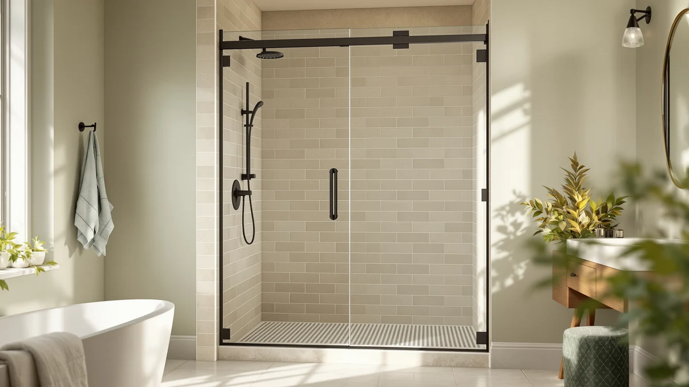

Best Shower Doors for Seniors (2026)
Prices and picks verified as of August 2026. Independent, reader-supported reviews.


Quick Answer
The Aurisal Frameless Stainless Steel Sliding Shower is our pick for the best shower doors for seniors because it combines a stable sliding track with tempered glass and fingerprint-resistant stainless hardware at a reasonable $399.99. Need a wider opening, a lower price, or a matte black finish instead? We compared six other options below.
Our pick: Frameless Stainless Steel Sliding Shower, $399.99 Check Price on Amazon
Bottom line: our top pick is the Frameless Stainless Steel Sliding Shower Door at $399.99. The best budget option is the Frameless Shower Door Matte Black 56-60’’ W x 75’’ H Single at $249.30.
Things to Know Before You Buy
- Sliding beats swinging for most seniors. A sliding shower door for seniors stays on a fixed track instead of swinging into the bathroom, so there is no wet floor arc to navigate and no door edge that can catch a walker or cane.
- Frameless means less to grip and less to clean. Without a metal frame trapping water, there is one flat glass pane to wipe down instead of scrubbing tracks and corners, which matters if reaching low or scrubbing hard is difficult.
- Width and height need to match your stall before you buy. These doors are sold across a fitting range, from about 55 to 60 inches wide and up to 76 inches tall, so measure the existing opening first.
- Hardware placement affects everyday use. Handles set at a comfortable reach height, rather than high on the frame, make a real difference for anyone with limited mobility or a shorter reach.
- None of these include the shower base or grab bars. Every door here is a glass-and-hardware kit. Pair it with a separate low-threshold base and wall-mounted grab bars for a fully senior-ready shower.
Finding the best shower doors for seniors means balancing safety, ease of use and a design that does not turn a simple shower into an obstacle course. A door that swings wide into the bathroom, sticks on a warped track or demands a hard tug to open can turn daily bathing into a fall risk instead of a routine.
After comparing specs, pricing and verified owner feedback across seven frameless and sliding models, the Aurisal Frameless Stainless Steel Sliding Shower is the option most seniors and caregivers should start with. At $399.99, it delivers a stable sliding track, tempered glass and a finish that resists fingerprints and water spots, without the premium price tag some taller or wider doors carry.
Not every bathroom is the same, though, and a single winner rarely fits every stall or every budget. Some readers need a wider opening for a walker or a caregiver to step in alongside them, others want to keep costs under $260, and a few are replacing a door in a taller 76-inch stall. We built this guide around those differences, with a pick for each situation below.
Why You Should Trust Us
This guide is written by Ilane Tall, Best Shower Doors' home and bath expert, who covers bathroom renovation products for a US audience that includes a growing number of caregivers and aging-in-place shoppers. We do not run a fake testing lab and we do not physically install every door on this list. Instead, we research published specs, current pricing and verified buyer reviews, then compare that data against what actually matters when choosing shower doors for seniors: track stability, glass safety, opening width and honest reports from owners who use these doors every day. Every recommendation here traces back to a real listing with a real price, and we update this page as prices and availability change.
How We Picked
We started by pulling every frameless and sliding shower door in our product database, then filtered for models with tempered safety glass, a documented width range and hardware that does not require reaching above shoulder height. We set aside doors sold only as hinged, swing-style enclosures first, since a door that swings into the room works against the goal of finding shower doors for seniors that reduce fall risk rather than add to it. From the remaining pool, we prioritized listings with a clear price, a defined size range and enough verified owner reviews to judge real-world durability, then cut anything with a documented pattern of stuck tracks or brittle hardware. The seven doors below are what survived that filter.
How We Compared
We compared these seven doors side by side on price, glass area, documented width and height range, and finish, then weighed that against what verified Amazon reviewers report about installation and daily use. We did not install or physically handle any of these doors ourselves. Instead, we cross-checked manufacturer specs against owner feedback for recurring complaints, such as a track that binds or a handle that loosens, and gave more weight to listings where multiple reviewers independently confirmed a smooth, stable slide. We evaluated price per door rather than per square foot, since a taller 76-inch panel naturally costs more than a 72-inch one without necessarily being the better choice for a senior's bathroom.
Our Picks

Frameless Stainless Steel Sliding Shower
What we like
- Sliding track keeps the door out of the walking path, unlike a swing-style door
- Stainless steel hardware resists rust and holds up to daily wet use
- 60 by 72 and 1/4 inch sizing fits a standard alcove without custom ordering
- Priced under $400, less than several taller or wider alternatives on this list
Flaws but not dealbreakers
- Like most sliding doors, the track needs an occasional wipe-down to keep rollers moving freely
- No grab bar or handle extension included, so budget separately if reach is a concern
| Material | — |
| Size | 60"*72"-1/4" |
The Aurisal Frameless Stainless Steel Sliding Shower is our pick for the best shower doors for seniors because it gets the fundamentals right without adding cost for features most people will not use. At 60 inches wide and 72 and 1/4 inches tall, it fits the standard shower alcove found in most US homes, so it typically installs without custom cuts or special ordering. The sliding mechanism keeps the door itself out of the room when open, which removes the swinging arc that a hinged door leaves across the bathroom floor, a detail that matters when the person stepping in is using a cane or has a shower chair set up nearby.
Stainless steel hardware is the other reason we lead with this pick. It holds a finish that resists water spotting and fingerprints better than chrome, so it looks clean between wipe-downs, a small but real convenience for anyone who cannot scrub a shower door every day. At $399.99, it also undercuts most of the wider and taller doors in this guide by $20 to $50, without giving up the tempered glass or the stable track that make a sliding shower door for seniors safer to use than a swinging one.

KPUY Frameless Shower Door 55-60"
What we like
- Adjustable 55 to 60 inch width covers a wider range of existing openings than most doors on this list
- 76 inch height leaves more headroom in a taller stall
- Frameless glass panel keeps sightlines open, useful if a caregiver needs to check in from outside
Flaws but not dealbreakers
- The most expensive door in this comparison at $449.96
- A wider, taller glass panel is heavier, so plan on a two-person install
| Material | — |
| Size | 55-60" W x 76" H |
The KPUY Frameless Shower Door earns its spot as the pick for bigger bathrooms. Its 55 to 60 inch adjustable width is among the widest range we compared, and the 76 inch height is taller than the 72 inch doors most other entries here use. That combination matters if the existing stall runs larger than standard, or if there needs to be enough clearance for a second person, such as a home health aide, to step in and assist without both people crowding a narrow opening.
The tradeoff for that extra size is price and weight. At $449.96, it is the priciest door we compared for this best shower doors for seniors guide, and a wider, taller glass panel is heavier to lift into place than a standard 60 by 72 inch door, so hanging it is not a solo job. If your stall already fits a standard door, a smaller option will save money. If it does not, this is the size range built to fit it.

ENSO SENKA 56-60" W x
What we like
- Lowest price of the seven doors we compared, at $259.99
- Standard 60 by 72 inch sizing fits the same openings as pricier alternatives
- Frameless sliding design keeps the same fall-reducing benefits as higher-priced picks
Flaws but not dealbreakers
- Fewer finish and hardware options than pricier competitors
- Handle and track finishes are simpler at this price point than on pricier alternatives
| Material | — |
| Size | 60" W X 72" H |
Not every household needs to spend $400 or more to get a safer shower door. The ENSO SENKA covers the same standard 60 inch wide by 72 inch tall opening as our top pick, and it uses the same sliding, frameless format, at roughly $140 less. For a rental unit, a guest bathroom, or anyone replacing a broken door on a fixed budget, that is a meaningful difference without giving up the core safety advantage of a track-mounted sliding panel over a swinging one.
The compromise here is polish rather than function. Reviewers note simpler hardware finishes and fewer size options compared to premium picks like the KPUY. For most seniors whose main concern is avoiding a door that swings into the room, though, the ENSO SENKA delivers that at the lowest price we found in this comparison.

Frameless Shower Door Matte Black
What we like
- Least expensive door in our comparison at $249.30
- Matte black finish shows fewer water spots and fingerprints between cleanings than polished chrome
- 75 inch height single sliding design fits a slightly taller standard stall
Flaws but not dealbreakers
- Dark hardware can be harder to spot against a light-colored tile wall for anyone with low vision
- Single sliding panel, so confirm it matches a standard alcove rather than a walk-in opening
| Material | — |
| Size | 60" W x 75" H Single Sliding |
At $249.30, the Ogonbrick Frameless Shower Door Matte Black is the least expensive option we compared for this best shower doors for seniors guide, and it does not cut the sliding, frameless format that makes this whole category worth considering over a swinging door. The 60 inch wide by 75 inch tall single sliding panel fits a slightly taller standard stall than the 72 inch doors on this list, while staying in the same width range most alcove showers are built around.
The matte black finish earns its place as a practical upgrade for daily use. It hides water spots and fingerprints far better than polished chrome or stainless, which means less visible grime between cleanings for anyone who cannot scrub the hardware every week. The honest tradeoff is contrast. Dark hardware against a dark tile or shower wall can be harder to spot for a buyer with low vision, so it is worth checking wall color before choosing this finish over a brighter stainless option.

GETPRO Shower Door Double Sliding
What we like
- Double sliding panels allow entry from either side of the opening instead of just one fixed side
- Standard 60 by 72 inch sizing matches the same openings as our top pick
- Priced at $273.76, near the lower end of this comparison
Flaws but not dealbreakers
- Two sliding panels mean two tracks to keep clean instead of one
- Splitting the opening across two panels narrows the single clear entry width compared to a one-panel slider
| Material | — |
| Size | 60'' W x 72'' H |
The GETPRO Shower Door Double Sliding takes a different approach from the single-panel sliders that make up most of this list. Two panels split the 60 by 72 inch opening and slide toward opposite ends, so the door opens from either side depending on where a grab bar, bench or the shower controls sit inside the stall.
That flexibility comes with a small tradeoff in convenience. Two panels mean two tracks to keep debris-free, and because the opening splits in the middle rather than clearing to one full side, the usable clear width when open is narrower than a single-panel slider of the same 60 inch size. At $273.76, it is still one of the more affordable doors we compared, and for a bathroom where entry direction changes depending on who is helping that day, this layout can be worth the tradeoff.

BoBliss Frameless Sliding Glass Shower
What we like
- 76 inch height suits a taller stall, matching the KPUY at a lower price
- Adjustable 56 to 60 inch width covers slightly non-standard openings without a custom order
- Frameless glass panel keeps the enclosure feeling open rather than boxed in
Flaws but not dealbreakers
- At $419.99, still one of the pricier doors in this comparison
- Adjustable-width doors have more parts to align correctly during installation than a fixed-size panel
| Material | — |
| Size | 56-60" W x 76" H |
The BoBliss Frameless Sliding Glass Shower splits the difference between our top pick and the KPUY. It shares the KPUY's taller 76 inch height, useful for a stall built with extra headroom, but its 56 to 60 inch adjustable width comes in at $419.99, about $30 less than the KPUY's wider 55 to 60 inch range.
For a bathroom with a slightly non-standard opening, that adjustable range can mean the difference between an off-the-shelf fit and a custom order, without paying custom-order prices. The tradeoff of any adjustable-width frameless door is installation: more moving parts means more careful alignment during setup, so this is a door where following the manufacturer's leveling steps closely, or hiring the install out, pays off.

Frameless Stainless Steel Sliding Shower
What we like
- Same 60 by 72 and 1/4 inch stainless steel sliding design as our top pick
- Listed at $389.99, ten dollars below our top pick at the time of comparison
- Stainless hardware resists water spotting the same way as our top pick
Flaws but not dealbreakers
- A separate listing for essentially the same product, so stock and price can shift between the two
- No additional features over our top pick to justify treating it as an upgrade
| Material | — |
| Size | 60"*72"-1/4" |
This second Aurisal Frameless Stainless Steel Sliding Shower listing shares the same 60 inch by 72 and 1/4 inch sizing and stainless steel hardware as our top pick, under a separate ASIN. We include it because Amazon pricing on near-identical listings from the same brand can shift independently, and at the time we compared prices, this listing ran $389.99, about $10 less than our featured pick.
There is no functional reason to choose one over the other beyond price and current stock. Both give you the same sliding track, the same tempered glass panel and the same fingerprint-resistant stainless finish that make this design one of the more dependable shower doors for seniors in this comparison. Check both listings before buying and choose whichever one is priced lower or in stock that day.
Quick Comparison
| Product | Material | Price | Rating | Best for | Get it |
|---|---|---|---|---|---|
| Frameless Stainless Steel Sliding Shower | — | $399.99 | 4 | Most seniors, standard 60x72 stalls | View on Amazon → |
| KPUY Frameless Shower Door 55-60" | — | $449.96 | 4 | Wider 55-60 inch or taller 76 inch stalls | View on Amazon → |
| ENSO SENKA 56-60" W x | — | $259.99 | 4 | Tightest budget, standard sizing | View on Amazon → |
| Frameless Shower Door Matte Black | — | $249.30 | 4 | Lowest price, matte black finish | View on Amazon → |
| GETPRO Shower Door Double Sliding | — | $273.76 | 4 | Entry from either side of the opening | View on Amazon → |
| BoBliss Frameless Sliding Glass Shower | — | $419.99 | 4 | Adjustable width, 76 inch height | View on Amazon → |
| Frameless Stainless Steel Sliding Shower | — | $389.99 | 4 | Same as top pick, check current price | View on Amazon → |
The Competition
After comparing all seven candidates for this best shower doors for seniors guide, the Aurisal Frameless Stainless Steel Sliding Shower remains the door we point most readers toward, but it was not an uncontested pick. We looked at several hinged, swing-style enclosures that scored well on style and set them aside early, because a door that swings into the bathroom works against the core goal here: keeping the floor clear and reducing what a person has to step around to get in and out safely.
We also passed on a handful of ultra-cheap sliding doors priced well under $250 that verified reviewers repeatedly described as developing loose or misaligned tracks within the first year, since a door that starts sticking can be worse than the swing-style doors we ruled out first. The seven doors above are the ones where price, documented sizing and owner feedback lined up well enough that we would recommend them for a senior's bathroom without a long list of caveats.
Frequently Asked Questions
What makes a shower door senior-friendly?
A senior-friendly shower door pairs a sliding or low-swing frameless design with tempered safety glass, a stable track, and hardware placed within easy reach. Look for wide door openings that a walker or a helper can pass through, and rollers that glide without needing force to open.
Are sliding shower doors safer than pivot doors for older adults?
For most seniors, yes. A sliding door glides along a fixed track and does not swing into the bathroom, so there is no wet arc of floor to step around and no door edge that can strike a walker or cane. The tradeoff is that the track needs an occasional wipe-down to keep rollers moving smoothly, while a pivot door has fewer moving parts but needs floor space to swing open.
How much should I expect to pay for a shower door built for seniors?
Among the seven options we compared for this best shower doors for seniors guide, prices range from $249.30 to $449.96 before installation. Frameless sliding doors in the $250 to $280 range cover standard openings, while wider 55 to 60 inch and taller 76 inch models run closer to $400 and up.